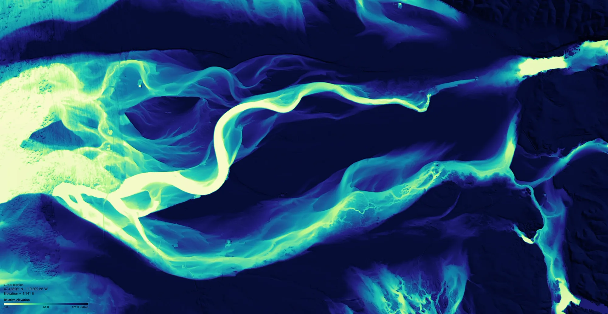
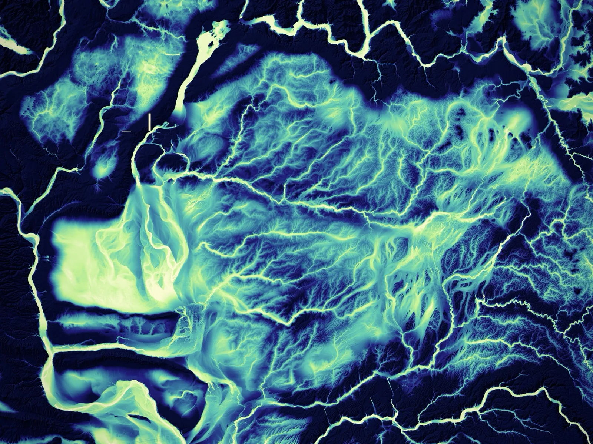
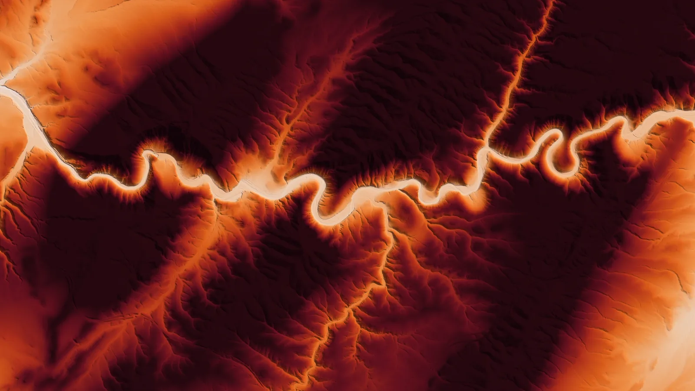
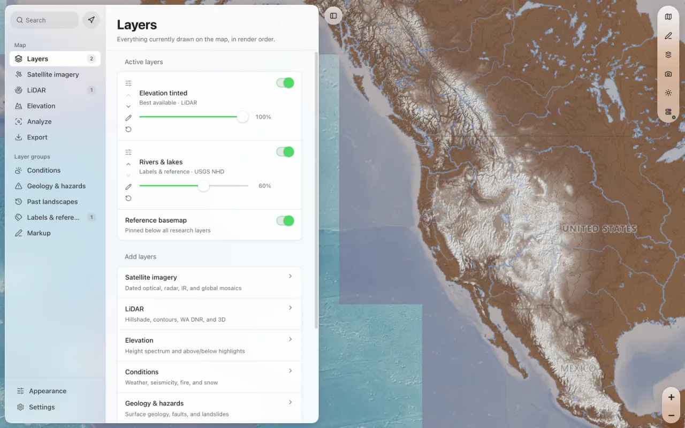
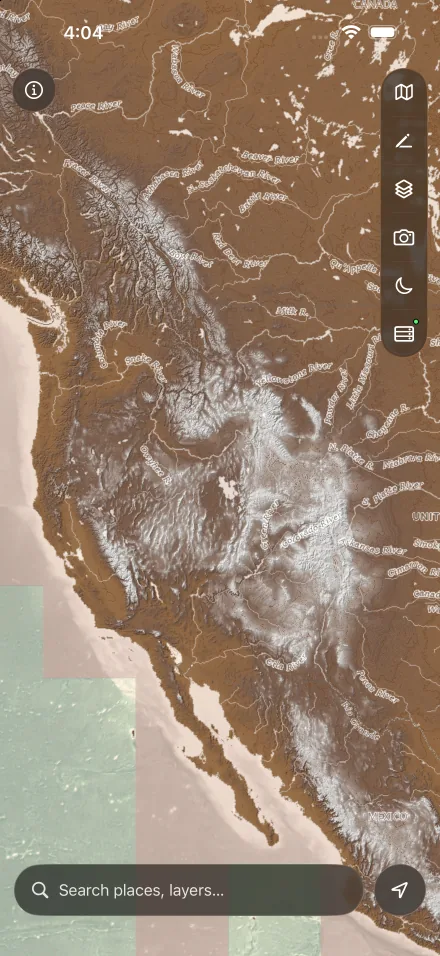

Geology & hazards
Surface geology, faults and landslides.
A map for reading the land. The newest satellite scenes, LiDAR terrain you can relight from any angle, and point clouds you can strip to bare earth.

LiDAR terrain
National USGS 3DEP elevation loads everywhere, decoded on your own device. With the terrain engine running, ClearSkies adds raw 1 m DEMs and official WA DNR bare-earth surveys, and every style below is drawn from the same numeric elevation.


3D terrain
Low, grazing light raises relief that overhead imagery flattens. Raw elevation relights instantly from the cached DEM, in 2D or in a pitched, orbitable 3D view. These are the app's own four controls.
Point clouds
Stream USGS 3DEP point clouds across Washington straight from the public archive, with a 1 to 10 million point budget, Eye-Dome Lighting and ASPRS class filters. Bare earth keeps class 2 only, and the 2D map stays linked as your reference.
Satellite imagery
ClearSkies finds the most recent Sentinel-2 and Landsat imagery for any place you search, with scene filters, dated optical, radar and infrared layers, and global mosaics. Layers stack in render order, and each keeps its own opacity.

In the field

Layer groups
Surface geology, faults and landslides.
Weather, seismicity, fire and SNODAS snow.
Glacial moraines and the landforms the ice left behind.
Rivers and lakes from the USGS National Hydrography Dataset.